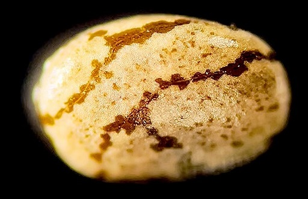

Appendix Notes#
Appendix topics with indexed links to this page in the (Introduction User Manual Tools Theories Strategies) category
template
Link: copy & past from appendix topic
FootnoteTextGoesHere

Nindo in Japanese translates to ninja way. Chiado emulates that to mean chia way.
In the Naruto universe, nindo (literally "Ninja Way") is a personal creed, motto, or philosophy that a shinobi lives by. It serves as a moral compass that guides a character's actions, decisions, and growth throughout their life.
Chiado is a real life application of this concept.
Chia seeds are best harvested when the flower head is dry and brittle. You pluck off the flower head and crush it in your hands, leaving a mixture of light, brittle chaff and heavier solid seeds. You gently blow away the chaff, leaving the valuable seeds in your palm. You can choose which to leave, or save in a seed bank, or sow now.
A task or goal can be compartmentalized as a chia seed. The chaff is stuff that's not relevant to the seed. Chia plants are also self seeding, which can distract from harvested seeds. Sometimes, seeds are hidden.
Anti seeds are an aversion to a task or goal. Harvested and self seeded seeds can be regular seeds or anti seeds. When regular seeds collide with anti seeds they annihilate.
In the Naruto universe, the Rasengan (literally "Spiralling Sphere") is a powerful technique that involves grinding a spinning ball of pure chakra into a target.
In chiado, rasengan describes whatever techniques you use to optimize your biometrics and/or environmental conditions to improve the efficacy of response to chia seeds. Sometimes, hidden seeds can affect rasengan unexpectedly.
Rasengan is made of 5 elements. You can use one or combinations of multiple elements. Rasengan can be used freely without commitment to a specific seed or ritual.
If you feel the need, then worship Chia strategically to charge your rasengan or use various other things that inspire you. Structure it as a prayer.
You can sacrifice things to Chia. It can be emotions and feelings like fear and anxiety. It can be hardships like work or commitments that you don't want to do. It can be structured as seeds or seedless.
Earth: Check your physical existence and observe the physical world around you with your senses.
Wind: Intellect, movement and speed.
Fire: Passion, energy and endurance.
Water: Fluid, feelings, emotions, flexibility and sound therapy.
Ether: Astral projection, higher consciousness or into the void.
Appendix topics with indexed links to this page in the (Introduction User Manual Tools Theories Strategies) category
template
Link: copy & past from appendix topic